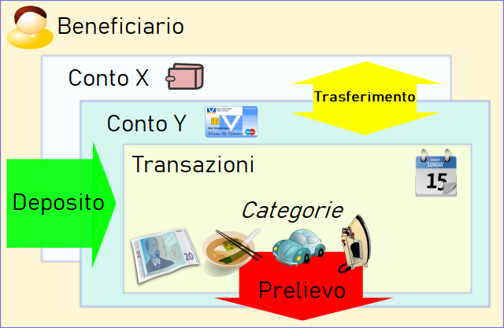

Money Manager Ex (MMEX) è un software di gestione del denaro personale per chiunque abbia deciso di tenere traccia dei propri soldi e delle proprie abitudini di spesa. Basato su semplici principi, permette a chiunque con poche o nulle conoscenze in campo finanziario e di tenuta dei conti, di gestire con successo il proprio denaro. MMEX ci riesce facendo riferimento al mondo finanziario reale, per aiutarci (gli utenti) a mantenere le nostre finanze personali. Il software Money Manager EX è Opensource ed è di libero uso.
L'obiettivo principale di MMEX è semplificare il processo di monitoraggio delle informazioni finanziarie, in un programma facile da usare, utilizzabile regolarmente se necessario, per aiutarci a monitorare da dove provengono i nostri soldi e, molto più importante, dove vanno, per poter prendere decisioni finanziarie migliori per il nostro futuro.
Immagina Money Manager Ex come un libro contabile elettronico, che ti permette di verificare i tuoi conti, organizzare, gestire e tenere traccia delle tue finanze.
È anche un ottimo modo per tenerti al passo con i tuoi obiettivi finanziari.
Lo scopo di questo manuale è di darvi alcune istruzioni di base per l'utilizzo di MMEX. Questo manuale di istruzioni evolverà di pari passo con il programma. Per cui controlla il file di aiuto ad ogni aggiornamento e guarda cosa c'è di nuovo e come puoi utilizzare al meglio MMEX.
Organizzarsi finanziariamente richiede una certa quantità di disciplina. La gestione finanziaria può diventare complicata quando non c'è una chiara comprensione di quanto denaro stiamo ricevendo, considerato come un'entrata, rispetto alle spese, ovvero a quanto denaro che spendiamo.
L'indebitamento di solito si verifica quando il nostro flusso di cassa è limitato perché le nostre spese superano le nostre entrate. Quindi abbiamo bisogno di prendere in prestito denaro per mantenere il nostro flusso di cassa per permetterci di acquistare i beni necessari.
Il primo passo verso una migliore salute finanziaria, è quello di mantenere i registri finanziari aggiornati e in ordine. È solo quando abbiamo una comprensione chiara di dove va il nostro denaro, che possiamo prendere una decisione consapevole su dove tagliare le nostre spese quando il flusso di cassa si riduce. Se abbiamo bisogno di prendere in prestito denaro, dobbiamo poi essere in grado di gestire altrettanto bene i nostri debiti.
Ti sei accorto che hai speso 600 € a comprare film in DVD l'anno scorso? Quante volte li hai guardati? Non pensi che ora i € 600 sarebbero stati meglio spesi nell'imprevisto occorso ieri alla tua auto? Di sicuro non c'è una risposta giusta o sbagliata su come puoi spendere i tuoi soldi. Dopotutto sei tu che te li sei guadagnati e hai tutto il diritto di spenderli nel modo che ritieni più opportuno. Tuttavia, è sempre possibile fare in modo che venga speso in modo più efficiente. E sperare di ottenere il massimo da ogni euro/dollaro spesi.
Ecco che arriva in vostro aiuto un software per la gestione delle finanze personali. È qui che entra in gioco il software di contabilità personale. Permette di strutturare ed esaminare i dati finanziari, offrendo una migliore visibilità di ciò che accade. Ricorda sempre che il software è valido solo in base alle informazioni che gli fornisci. Dati sbagliati, forniranno risultati sbagliati. Ma se hai già iniziato a pensare a un software per la contabilità personale, allora sei già sulla buona strada per fare un uso migliore di ogni singolo euro che hai.
Andiamo quindi avanti per vedere come utilizzare Money Manager Ex.
Money Manager EX riproduce il mondo reale per aiutarci a gestire le nostre finanze personali.
Di solito noi riceviamo denaro da qualcuno per i servizi che offriamo o per un prodotto che abbiamo venduto. Questo, nel nostro sistema, viene considerato come un'Entrata o come un Deposito. Quando acquistiamo qualcosa o usufruiamo di un servizio, questo viene considerato come un'Uscita o un Prelievo nel nostro sistema. In MMEX le persone che ci forniscono denaro o ricevono i nostri soldi sono definiti Beneficiari.
Poiché presumibilmente auspichiamo di non spendere tutto il denaro che riceviamo, abbiamo ovviamente bisogno di un posto in cui conservare il nostro denaro. In genere, si tratta di un istituto finanziario o di più istituti o del nostro portafoglio. MMEX etichetta questi istituti come Conti.
Quando spendiamo o riceviamo denaro, la consideriamo una Transazione, e il motivo dell'entrata o dell'uscita è la nostra Categoriadfn>. In alcuni casi è necessario trasferire denaro da un posto all'altro, come ad esempio un prelievo da uno sportello automatico (quindi dal conto bancario al contante). Questo tipo di transazione viene definita Trasferimento..
Questa situazione potrebbe essere semplificata come mostrato nello schema seguente:
Un'altra cosa importante da considerare è la valuta con cui effettuiamo le transazioni.
Con tutte queste cose da tenere sotto controllo, MMEX utilizza un database per memorizzare e collegare tra loro tutte queste informazioni.
Il database che viene generato da MMEX, noto come file .mmb ,
diventa un file importante da proteggere. A seconda delle circostanze, si può utilizzare la crittografia come garanzia di sicurezza e il file che ne deriva è riconosciuto come un file. Questo è possibile grazie alla possibilità di
allegare una password al database e che sarà richiesta
ogni volta che MMEX viene aperto.
.emb
Come con qualsiasi sistema di computer, i dati che produciamo sono fondamentali per noi, ed è quindi necessario salvaguardarli contro ogni malfunzionamento del sistema. MMEX ha un sistema di backup con cui può produrre una copia datata quando il database di è aperto, e/o produrre una copia datata del database quando vengono rilevate modifiche. Quando viene inizializzato il sistema e/o quando sono state rilevate modifiche di sistema, e il sistema viene arrestato vengono mantenute fino a 4 copie di backup per ogni database.
.mmb o .emb regolarmente.Quando si avvia MMEX, tenterà di caricare l'ultimo database che è stato aperto. Se non esiste alcun database, all'utente viene presentata l'opzione di aprire un database esistente o di crearne uno nuovo.
Se è necessario creare un nuovo file di database, dal menu selezionare File → Nuovo Database.
Questo vi chiederà di specificare un nuovo nome per il file di database.mmb, in corrispondenza della posizione specificata. Ora viene creato il nuovo file di database
e la creazione guidata Database verrà visualizzata per aiutarvi a inizializzare il nuovo database e assistervi nel creare il vostro primo conto.
La creazione guidata Database vi chiederà di impostare la Valuta Base e un nome utente.
MMEX è dotato di un set predefinito di valute che è possibile utilizzare, per avere corrispondenza con la valuta del vostro paese. I nuovi account useranno questa impostazione Base Currency come predefinita. Questo permette agli account di diversi paesi di riflettere il valore in la valuta di base.
Per contribuire a identificare lo scopo del database, un User Name è richiesto. Questo è opzionale, perché è utilizzato solo come titolo nella pagina iniziale e nei report.
Entrambe queste impostazioni possono essere modificate successivamente, se necessario, selezionando il menu: Strumenti → Opzioni.
Il nome del database verrà visualizzato sulla barra del titolo per aiutarvi a ricordare quale file di database è aperto.
il nuovo file di database
.mmb non è crittografato.
Quando si crea un nuovo file di database, vi verrà automaticamente chiesto di creare un nuovo conto.
Per creare manualmente un nuovo conto, dal Menu, selezionare Conti → Nuovo conto.
Questo visualizzerà la procedura guidata Aggiungi Conto. La procedura guidata vi assisterà nella raccolta delle informazioni importanti del Nome e il tipo di Conto. Il tipo di Account non è modificabile, ma il nome può essere cambiato durante la modifica delle informazioni relative all'account.
Nome del conto: questo è un campo obbligatorio. La raccomandazione è di denominare il vostro conto in modo univoco e legato alla
realtà del conto. Esempio: con CityBank, abbiamo un conto di risparmio
e una carta di credito Visa. Potresti chiamare i tuoi conti come CitiBank risparmio
e Citibank Visa
.
Tipo di Conti: MMEX supporta diversi tipi di Conti.
Per impostare correttamente i conti, è necessario avere informazioni sul saldo per i conti che vuoi aggiungere a MMEX. Puoi ottenere queste informazioni dai tuoi estratti conto più recenti della banca, degli investimenti e delle carte di credito. Per monitorare ulteriori informazioni su questo conto, opzionalmente puoi inserire i dettagli del tuo conto come Numero di conto Detenuto presso, Sito web, Informazioni di contatto e Informazioni di accesso. È possibile inserire delle note aggiuntive sul conto nel campo delle note.
Gran parte dei conti hanno una sorta di saldo al loro interno, ad esempio, in un conto della carta di credito, hai un saldo corrente di $2304,67, potresti mettere quel valore nel campo del saldo iniziale. Procedendo, dovrai solo aggiungere transazioni oltre quella data quando avevi il bilancio.
Lo Stato del Conto è impostabile su Aperto o Chiuso. I conti chiusi sono semplicemente chiusi. Non sono più attivi. Impostare questo stato è solo un modo per disordinare la tua vista nel pannello di navigazione della vista ad albero. Le impostazioni permanenti sono effettuate cambiando le Opzioni della Vista sul Menu, Strumenti → Opzioni, puoi nascondere i conti chiusi. Vedi i Suggerimenti sull'Albero di Navigazione.
Valuta: Questa è inizialmente impostata alla Valuta di Base del database che è stata impostata inizialmente durante la sua creazione. Puoi impostare la valuta che è associata a questo conto e può essere diversa da quella di base.
Il tasso di cambio per la valuta è modificabile usando il menu: Strumenti → Organizza >Valuta.
Esempio: Vivi negli USA usando i Dollari US e hai un conto bancario italiano che usa l'Euro. Gran parte dei tuoi conti sono in USD. Qual è il reale valore del tuo conto bancario italiano? Cambiando il tasso di cambio per l'Euro italiano, puoi ottenere il valore corretto dei tuoi conti.
Puoi anche contrassegnare i conti come Conto Preferito>. Questo, ancora, è usato per modificare i conti visibili nella barra di navigazione. Vedi Suggerimenti sull'Albero di Navigazione.
Abbiamo un conto di risparmio con $1250, un conto corrente con $500, una MasterCard da £250, una Carta Visa con $475, un mutuo immobiliare di $230,965 e un fondo d'istruzione per mandare i figli all'università in futuro correntemente a $5000 con interessi.
Impostiamo i seguenti conti:
| Tipo di conto | Nome del conto | Saldo iniziale |
|---|---|---|
| Assegno/risparmio | Risparmi | $1.250,00 |
| Controlla | $500.00 | |
| MasterCard | -$250.00 | |
| Visa Card | -$475.00 | |
| Conto Deposito a Termine | Mutuo casa | -$230,965.00 |
| Fondo per l'educazione | $5,000.00 |
Sulla Pagina Home, i bilanci sarebbero $1025 per i conti Bancari e a $-225,965 per i Conti a Termine
Quando un pagamento è effettuato dal tuo Conto di Risparmio alla tua MasterCard con una Transazione di Trasferimento, il bilancio sulla pagina home rimane uguale. Quando è effettuato un pagamento dai tuoi risparmi al tuo mutuo immobiliare, il bilancio sulla home page rifletterà il pagamento. Ora puoi determinare l'importo di denaro che hai su base giornaliera. I pagamenti regolari, inoltre, sono configurabili dal tuo conto di risparmio al conto del tuo mutuo usando le Transazioni Ricorrenti.
Una volta creato un conto, puoi modificare ogni informazione del conto nei seguenti modi:
Questo farà comparire la finestra di informazioni del conto dove sono modificabili i campi richiesti.
Modifica i dettagli del conto, poi usa il pulsante OK per salvare le informazioni del conto.
Una volta creato un nuovo conto, e selezionato quello richiesto il conto dall'albero di navigazione o dalla pagina iniziale, al conto visualizzato si possono aggiungere transazioni come segue:
Questa finestra di dialogo apparirà per le nuove operazioni. Usa questa finestra per inserire i seguenti dettagli:
La modifica delle transazioni esistenti è eseguibile in diversi modi:
Tutte queste azioni apriranno la finestra di dialogo della transazione contenente i dettagli della transazione selezionata. Apporta le modifiche e clicca OK per salvare le modifiche.
Le transazioni sono filtrabili dai filtri fissi o usando il Filtro della Transazione nella Vista del Conto. Questo consentirà all'utente di limitare le transazioni visibili a quelle definite dal filtro appropriato. Queste transazioni filtrate sono facilmente selezionabili e modificabili individualmente.
Queste transazioni visibili sono inoltre eliminabili in massa se desiderato.
In MMEX; le transazioni riconciliate e non riconciliate sono indicate da icone differenti. Quando i dettagli bancari non sono controllati rispetto alla dichiarazione di una banca, l'utente può selezionarli per impostare il valore predefinito a Riconciliata creando le transazioni nelle impostazioni Opzioni.
Alcune transazioni potrebbero avere alcuni problemi che desideri seguire. Contrassegnale con lo stato di flag per proseguimento. Questo è indicato in MMEX con un'icona differente.
L'utente può specificare 7 colori personalizzati nella sezione colori della finestra delle opzioni. Ne pannello di controllo/termine, premere Ctrl+1 tramite Ctrl+7 imposta il colore della voce della transazioni al colore personalizzato specificato dall'utnete. Premere Ctrl+0 lo modificherà nuovamente al colore della transazione predefinito di mmex.
MMEX è utilizzabile in molti paesi, MMEX deve considerare la valuta in uso per il paese. Creando un nuovo database, la Valuta di Base è impostata alla valuta usata nel paese dell'utente. Se l'impostazione della valuta dell'utente non è elencata nelle valute predefinite, l'utente può creare il proprio Listino di valute.
MMEX ci consente di operare con più di una valuta. Ogni conto ha la propria impostazione di valuta e sarà predefinito alla valuta di base. Quando impostiamo conti con valute differenti, le transazioni che creiamo in questi conti rifletteranno la valuta del conto.
Puoi gestire le Valute usando l'elemento del menu Strumenti → Organizza Valuta.
Aggiungi una nuova Valuta:
Quando oltre una valuta è usata, la Conversione al Tasso di Base dev'esser impostata. Questo consentirà al valore della valuta di riflettere propriamente il valore al tasso di base.
Per consentire l'aggiornamento della Valuta Automatico il Simbolo della Valuta dev'esser impostato per la valuta particolare in uso.
Le categorie indicano il motivo per cui è fatta una spesa o un'entrata è ricevuta.
Una Categoria è generalmente usata per registrare Entrate o Spese. Poiché MMEX ci consente di trasferire denaro tra i conti, si consiglia anche di usare le categorie per registrare i trasferimenti. Questo ci consentirà di determinare che denaro è in trasferimento per un motivo specifico, come un rimborso di un prestito. Questo non sarà considerato come un'entrata o una spesa nel quadro generale. Usare la stessa categoria per un'entrata e una spesa sconvolgerà le cifre del bilancio.
Esempio: Se vuoi registrare il valore di un'auto in funzione, configureremmo quanto segue:
Le prime 4 sottocategorie sono usate per registrare le spese. Se siamo rimborsati per i costi del carburante per qualsiasi motivo, dovremo usare Carburante Rimborsato come sottocategoria d'Entrata. Questo ci consentirebbe poi di determinare l'importo corretto che stiamo spendendo in carburante per operare l'auto. Questo diverrà più chiaro usando i Budget.
Aggiungendo una nuova transazione, possiamo usare oltre una categoria per registrare una transazione. Questa è nota come categoria divisa.
La transazione complessiva della categoria divisa è un prelievo o un deposito. Sebbene le categorie entro la divisione debbano riflettere il tipo complessivo della transazione, ogni categoria è classificabile come un prelievo o deposito entro la divisione.
Le categorie divise sono facilmente visualizzabili per una transazione usando la selezione di un menu popup quando una voce della categoria divisa esiste.
Puoi gestire le Categorie usando l'elemento del menu: Strumenti → Organizza Categorie. Una volta che la finestra della categoria si apre, puoi aggiungere nuove categorie e sotto-categorie.
Per Aggiungere una Nuova Categoria:
Per Aggiungere una Nuova Sotto-Categoria:
Puoi anche modificare i nomi selezionando la categoria/sottocategoria nell'elenco, modificando il nome nella casella di testo e poi usando il pulsante Modifica. Usa un'azione simile per eliminare la categoria/sottocategoria nell'elenco.
Assicurati che nessuna transazioni usi questa combinazione di categoria/sottocategoria. Questo è eseguibile:
Questo renderebbe la categoria liberà così da esser eliminabile.
I beneficiari sono le persone o istituzioni che ci danno denaro, o le persone o istituzioni che paghiamo per i nostri beni e servizi.
Puoi gestire i Beneficiari usando l'elemento del menu: Strumenti → Organizza Beneficiari.
Una volta aperta la finestra del beneficiario, puoi aggiungerne di nuovi, modificarne o eliminarne di esistenti.
Per aggiungere un nuovo Beneficiario:
Puoi anche selezionare il beneficiario nell'elenco, poi usare il pulsante Modifica o Elimina per eseguire l'azione richiesta.
Per eliminare un beneficiario, assicurati che nessuna transazione lo utilizzi. Questo si può fare:
Questo renderebbe il beneficiario libero così da esser eliminabile.
MMEX ha una WebApp leggera installabile su ogni webserver PHP come NAS, hosting condiviso o altra installazione locale di PHP.
Puoi scaricare tutti i file necessari dalla pagina del progetto WebApp.
Per avviare WebApp devi solo:
htaccess.txt in .htaccess (su Windows devi farlo da CMD e tramite il comando rename)
PDO_SQLite se necessarioPoi apri semplicemente il tuo browser all'URL della cartella, compilare prima le impostazioni e inserire l'URL corretto e GUID nelle impostazioni di MMEX (scheda importazione/esportazione).
Ora a ogni avvio MMEX contatterà la WebApp per scaricare e importare le nuove transazioni nel database desktop.
Tutte le impostazioni collegate delle transazioni principali saranno sincronizzate automaticamente alla WebApp così che potrai avere il tuo profilo e tutti i tuoi beneficiari pronti all'uso inserendo la nuova transazione.
Il Formato di Interscambio Accelerato (QIF) è una specifica aperta alla lettura e scrittura di dati finanziari ai multimedia (es. file). Un file QIF ha tipicamente la struttura seguente:
!Type:type identifier string [single character line code]Literal String Data ... ^ [single character line code]Literal String Data ... ^
Ogni registro termina con un ^ (segno d'omissione).
Vedi l'esempio di transazione QIF:
!Tipo:Intestazione Bancaria
D6/ 1/94 Data
T-1,000.00 Importo
N1005 numero
PBanca del Beneficiario del Mutuo
^ Fine della transazione
QIF è meno recente dello Scambio Finanziario Aperto (OFX). L'incapacità di riconciliare le transazioni importate contro le informazioni del conto attuale è una delle principali carenze del QIF. Comunemente è supportato dalle istituzioni finanziarie per fornire informazioni scaricabili ai titolari dei conti.
MMEX può importare le transazioni da tipi specifici di formati QIF in un conto (puoi trovare il tipo di QIF aprendolo in un editor testuale)
Dopo aver importato da QIF, tutte le transazioni dovranno avere un Contrassegno di Proseguimento come proprio stato. Puoi contrassegnare tutte le transazioni con tale flag usando i comandi d'impostazione dello stato di massa usando il menu del click destro nella vista del conto.
Per alleviare il problema di utenti doventi pre-formattare i propri file CSV di transazioni bancarie nel formato fisso richiesto da MMEX, MMEX consente anche agli utenti di importare i file CSV dove l'ordine dei campi è completamente libero.
Per usare questo importatore, seleziona il conto verso cui desideri importare e seleziona l'ordine dei campi nel file CSV selezionando e scegliendo dall'elenco di campi possibili. MMEX importerà ora il file CSV usando le informazioni del formato specificate dall'utente.
MMEX può importare un'ampia varietà di formati. Uno di essi è un file CSV a formato fisso. Questo formato del file corrisponde esattamente al formato CSV esportabile da MMEX. Quindi, può esser utile spostare i dati da un file del database .mmb a un altro file del database .mmb. Per vedere facilmente il formato del file CSV, puoi provare a esportare un conto a un file CSV e poi analizzare il formato creato.
Le opzioni del campo CSV sono le seguenti:
Creando il tuo file CSV, assicurati di rimuovere le virgole dai tuoi depositi e prelievi. Questo è facilmente eseguibile tramite un programma come Excel od OpenOffice Calc.
Dopo l'importazione da QIF, tutte le transazioni dovranno avere un Contrassegno di Proseguimento come proprio stato. Puoi contrassegnare tutte le transazioni con tale flag usando i comandi d'impostazione dello stato di massa usando il menu del click destro nella vista del conto.
Importare da XML per riconoscere il file XML in formato Excel denominato Foglio di Calcolo XML 2003
in Excel. Questo è il metodo d'importazione consigliato se richiesto per importare le transazioni da Excel.
Il metodo d'importazione e la selezione del campo è uguale all'importazione da CSV.
MMEX può esportare a un file CSCX a formato fisso. Questo formato del file corrisponde esattamente al formato CSV importabile da MMEX. Quindi può esser utile per spostare dati da un file del database .mmb a un altro file del database .mmb. Per vedere facilmente il formato del file CSV, puoi provare a esportare un conto a un file CSV e poi analizzare il formato creato.
Il formato generale è come segue:
MMEX può esportare a un file XML. Il formato XML è conforme con Excel e può esser letto da esso. Il formato generale è lo stesso del CSV.
MMEX può esportare un conto in un file del formato QIF. Questo formato è anche utilizzabile da MMEX per ricaricare in un conto.
Le Transazioni Ricorrenti sono transazioni speciali che configuriamo per inserire la transazione nella banca dati in una data futura. Queste transazioni si verificano generalmente a intervalli regolari, come il pagamento di una bolletta.
Queste transazioni:
Le Transazioni Ricorrenti sono accessibili dall'albero di navigazione o dall'elemento del menu Strumenti → Transazioni Ricorrenti. Questo mostrerà la pagina delle Transazioni Ricorrenti.
Per creare una transazione nuova, usa il pulsante Nuova:
MMEX ti consente di monitorare Titoli e Azioni. I Titoli totali sono aggiunti al tuo valore finanziario totale.
Ulteriori dettagli fanno riferimento a Titoli, Azioni e Gestione dei Dividendi Azionari in MMEX
MMEX ti consente di monitorare le risorse fisse come auto, case, terreni e altro. Ogni risorsa può avere il proprio valore apprezzato da un certo tasso annuo, deprezzamento di un certo tasso annuo, o nessuna modifica in valore.
Le risorse totali sono aggiunte al tuo valore finanziario totale.
Le risorse sono accessibili tramite Strumenti → Risorse o tramite il Menu di Navigazione.
Le risorse sono create nella finestra di Gestione delle Risorse.
Le transazioni di risorse sono aggiunte a una risorsa e collegate a un conto.
MMEX consente una varietà di rapporti. Seleziona il rapporto appropriato sotto il nodo dei Rapporti nell'albero di navigazione. Alcuni rapporti richiedono inserimenti dell'utente, altri no.
Questi rapporti generalmente non iniziano all'inizio dell'anno del calendario, e si presentano come rami dei titoli principali del rapporto.
Questi rapporti coprono:
La data iniziale è modificabile dall'utente per iniziare in qualsiasi giorno di qualsiasi mese, entro un periodo di 12 mesi usando il menu Strumenti → Opzioni → Generali.
Questo consente all'utente di generare rapporti specifici basati sui criteri selezionati dall'utente.
Un Rapporto di Transazione è generalmente usato per individuare transazioni specifiche effettuate nei conti di tipo Bancario o di Termine. Questo rapporto è anche utilizzabile per mostrare dettagli specifici per un conto particolare.
Per un Rapporto di Transazione, l'elenco di transazioni risultante è stampabile o salvabile come file HTML.
Poiché una transazione di trasferimento è un prelievo da un conto e un deposito a un altro, un rapporto di transazione effettuato su più conti perde il punto di riferimento per determinare se la transazione sia un deposito o un prelievo.
Quando un rapporto di transazione è usato per un conto specifico, genererà un rapporto corrispondente ai dettagli del conto. Il punto di riferimento per i trasferimenti è noto per questo rapporto e si rifletterà nella visualizzazione dei bilanci corretti nel rapporto.
Questo rapporto prevede l'importo di fondi disponibile, basato sugli impegni futuri.
Il rapporto userà le Transazioni Ricorrenti per vari conti e si rifletterà in avanti di 10 anni su base mensile. Questo diviene una predizione dell'importo di denaro che potrebbe esser disponibile ogni mese in base ai pagamenti correnti.
MMEX supporta la stampa di tutti i rapporti visualizzabili.
Una volta visualizzato un rapporto, puoi stamparlo usando il menu File → Stampa….
Puoi modificare dei comportamenti in esecuzione di MMEX modificando le opzioni nella Finestra delle Opzioni.
Accedi dal menu con Strumenti → Opzioni.
Puoi contribuire:
Originariamente ho sviluppato un software finanziario personale chiamato Money Manager. Era scritto in .NET ed era più un esercizio d'apprendimento che un software sviluppato seriamente. È cresciuto ben oltre il design originale. Il software fu congelato e iniziò il lavoro su una nuova versione con un'interfaccia utente e funzionalità simili, ma scritto in C++.
Solitamente, Microsoft denomina le seconde versioni delle API del proprio software migliorato con un'estensione Ex come in doSomething() e doSomethingEx(). Quindi ho semplicemente seguito il modello, aggiungendo un 'Ex' alla fine.
.mmb è un formato proprietario?No, il file .mmb non è proprietario.
MMEX usa database SQLite per memorizzare i dati dell'utente. Ciò significa che il file .mmb è un database SQLite regolare.
SQLite è uno dei più piccoli sistemi di database relazionali gratuiti in circolazione e ci sono molti strumenti per aprire e accedere ai database di SQLite. SQLiteSpy e
SQLite Browser
sono due di questi. Una volta aperto il database usando questi strumenti, puoi fare tutto ciò che vuoi con i dati.
Sì. I tuoi dati sono completamente al sicuro.
I dati sono contenuti sul tuo PC, (o chiavetta USB se li hai resi portatili). Per proteggere ulteriormente i tuoi dati, può esser aggiunta la crittografia. Ciò applica una password al file del tuo database, e può esser aperto solo da MMEX o ogni altro software, se hai la password corretta.
Si.
MMEX è un applicazione portatile, il che significa capacità d'esecuzione
senza installazione, ad esempio, da un'unità flash USB. Se MMEX
trova mmexini.db3 nella sua cartella, presume la modalità
portatile. Copia i file di mmex alla Chiavetta USB e copia i tuoi
mmexini.db3 nella cartella di mmex su quell'unità.
Per rendere MMEX portatile:
F:\ è un'unità flash USB)
C:\Program Files\MoneyManagerEx in
F:\%APPDATA%\MoneyManagerEx\mmexini.db3 in
F:\MoneyManagerExF:\/media/disk sia un'unità flash USB montata)
make install prefix=/media/disk cp ~/.mmex/mmexini.db3 /media/disk/mmex/share/mmex
/usr:
cp /usr/bin/mmex /media/disk/mmex/bin cp /usr/share/mmex /media/disk/mmex/share cp /usr/share/doc/mmex /media/disk/mmex/share/doc cp ~/.mmex/mmexini.db3 /media/disk/mmex/share/mmex
Generalmente, con qualsiasi programma sorgente chiuso, devi dipendere dalla parola del venditore per quanto riguarda la sicurezza dei dati. Ma poiché MMEX è open source, puoi verificare da solo questa affermazione.
Anche se non sei un esperto di C++, si può essere certi che chiunque può accedere al codice sorgente in qualsiasi momento e verificare la legittimità delle intenzioni di MMEX.
MMEX si connette a internet solo per inviare statistiche anonime di utilizzo o durante il controllo di un aggiornamento. Ecco un esempio di dati che MMEX invierà:
| Versione | Sistema operativo | Lingua | Paese | Risoluzione | Tempo Inizio | Tempo fine |
|---|---|---|---|---|---|---|
| 1.3.0 Portatile | Windows 8 (build 9200), edizione 64-bit | inglese | Stati uniti | 1366x768 | 2014-05-01 09:00:00 | 2014-05-01 09:01:30 |
Per stampare un estratto conto con transazioni da qualsiasi insieme arbitrario di criteri, usa il filtro transazione per selezionare le transazioni che vuoi e quindi fai una stampa dal menu File → Stampa….
Il filtro transazione è accessibile da Reports
→ Rapporti transazione sull'albero di navigazione,
o dai pulsanti di navigazione rapida nell'angolo in alto a sinistra di MMEX.